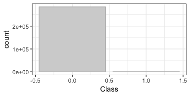
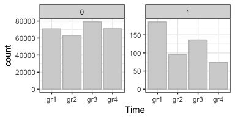
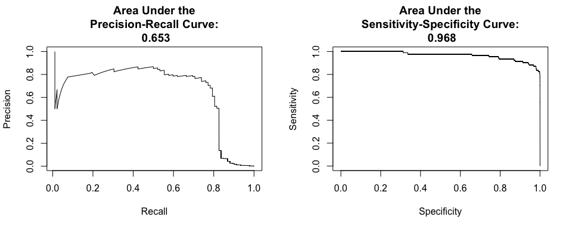
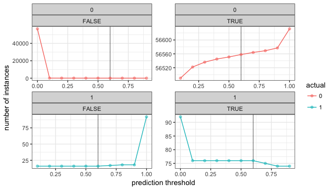

All my previous posts on machine learning have dealt with supervised learning. But we can also use machine learning for unsupervised learning. The latter are e.g. used for clustering and (non-linear) dimensionality reduction.
For this task, I am using Kaggle’s credit card fraud dataset from the following study:
Andrea Dal Pozzolo, Olivier Caelen, Reid A. Johnson and Gianluca Bontempi. Calibrating Probability with Undersampling for Unbalanced Classification. In Symposium on Computational Intelligence and Data Mining (CIDM), IEEE, 2015
The dataset gives > 280,000 instances of credit card use and for each transaction, we know whether it was fraudulent or not.
Datasets like this needs special treatment when performing machine learning because they are severely unbalanced: in this case, only 0.17% of all transactions are fraudulent.
While we could try to work with classifiers, like random forests or support vector machines, by applying over- or under-sampling techniques, we can alternatively try to find anomalies in the data (assuming we expect our fraud cases to be anomalies within the whole dataset).
When dealing with such a severe unbalance of response labels, we also need to be careful when measuring model performance. Because there are only a handful of fraudulent instances, a model that predicts everything as non-fraud will already achieve a > 99% accuracy. But despite its high accuracy, such a model won’t necessarily help us find fraudulent cases - the proverbial “needle-in-a-haystack” - that we actually want to find!
Below, I will show how you can use autoencoders and anomaly detection, how you can use autoencoders to pre-train a classification model and how you can measure model performance on unbalanced data.
Exploring the data
library(tidyverse)
# download from https://www.kaggle.com/dalpozz/creditcardfraud
creditcard <- read.csv("creditcard.csv")
The dataset contains numerical input variables V1 to V28, which are the result of a PCA transformation of the original features (which could not be provided due to confidentiality issues).
The response variable Class tell us whether a transaction was fraudulent (value = 1) or not (value = 0).
creditcard %>%
ggplot(aes(x = Class)) +
geom_bar(color = "grey", fill = "lightgrey") +
theme_bw()

There are two additional features, Time (time in seconds between each transaction and the first transaction) and Amount (how much money was transferred in this transaction).
Because Time only tells us the order in which transactions have been done, it doesn’t actually tell us anything about the actual times (i.e. time of day) of the transaction. Therefore, I am normalizing them by day and bin them into four groups according to time of day.
summary(creditcard$Time)
## Min. 1st Qu. Median Mean 3rd Qu. Max.
## 0 54202 84692 94814 139320 172792
# how many seconds are 24 hours
# 1 hr = 60 mins = 60 x 60 s = 3600 s
3600 * 24
## [1] 86400
# separate transactions by day
creditcard$day <- ifelse(creditcard$Time > 3600 * 24, "day2", "day1")
# make transaction relative to day
creditcard$Time_day <- ifelse(creditcard$day == "day2", creditcard$Time - 86400, creditcard$Time)
summary(creditcard[creditcard$day == "day1", ]$Time_day)
## Min. 1st Qu. Median Mean 3rd Qu. Max.
## 0 38432 54689 52948 70977 86400
summary(creditcard[creditcard$day == "day2", ]$Time_day)
## Min. 1st Qu. Median Mean 3rd Qu. Max.
## 1 37843 53425 51705 68182 86392
# bin transactions according to time of day
creditcard$Time <- as.factor(ifelse(creditcard$Time_day <= 38138, "gr1", # mean 1st Qu.
ifelse(creditcard$Time_day <= 52327, "gr2", # mean mean
ifelse(creditcard$Time_day <= 69580, "gr3", # mean 3rd Qu
"gr4"))))
creditcard %>%
ggplot(aes(x = day)) +
geom_bar(color = "grey", fill = "lightgrey") +
theme_bw()

We can see now that the transactions in this dataset have all been recorded on two consecutive days and there are roughly the same number of transactions on these two days.
Now, I remove the columns I used to create the Time bins.
creditcard <- select(creditcard, -Time_day, -day)
# convert class variable to factor
creditcard$Class <- factor(creditcard$Class)
creditcard %>%
ggplot(aes(x = Time)) +
geom_bar(color = "grey", fill = "lightgrey") +
theme_bw() +
facet_wrap( ~ Class, scales = "free", ncol = 2)

The distribution of transactions over the four Time bins shows, that the majority of fraud cases have happened in group 1 (although, I can’t say when exactly because the original Time feature did not tell us when the first transaction occurred).
I also want to look at the distribution of the amounts of money that were transferred:
summary(creditcard[creditcard$Class == "0", ]$Amount)
## Min. 1st Qu. Median Mean 3rd Qu. Max.
## 0.00 5.65 22.00 88.29 77.05 25691.16
summary(creditcard[creditcard$Class == "1", ]$Amount)
## Min. 1st Qu. Median Mean 3rd Qu. Max.
## 0.00 1.00 9.25 122.21 105.89 2125.87
creditcard %>%
ggplot(aes(x = Amount)) +
geom_histogram(color = "grey", fill = "lightgrey", bins = 50) +
theme_bw() +
facet_wrap( ~ Class, scales = "free", ncol = 2)

Interestingly, fraudulent credit card transactions had a higher mean amount of money that was transferred, but the maximum amount was much lower compared to regular transactions.
Modeling
For modeling, I am using R’s H2O implementation with the h2o package. For more details and other examples, see my posts on my machine learning webinar, on building neural nets with h2o and on performing grid search for hyperparameter tuning.
library(h2o)
h2o.init(nthreads = -1)
## Connection successful!
##
## R is connected to the H2O cluster:
## H2O cluster uptime: 7 minutes 6 seconds
## H2O cluster version: 3.10.4.4
## H2O cluster version age: 16 days
## H2O cluster name: H2O_started_from_R_Shirin_nly512
## H2O cluster total nodes: 1
## H2O cluster total memory: 1.60 GB
## H2O cluster total cores: 2
## H2O cluster allowed cores: 2
## H2O cluster healthy: TRUE
## H2O Connection ip: localhost
## H2O Connection port: 54321
## H2O Connection proxy: NA
## H2O Internal Security: FALSE
## R Version: R version 3.4.0 (2017-04-21)
# convert data to H2OFrame
creditcard_hf <- as.h2o(creditcard)
Then, I am splitting the dataset into training and test sets. Because I want to check how a pre-trained model with perform, I am splitting my data into two separate training sets and one independent test set for final model comparison.
splits <- h2o.splitFrame(creditcard_hf,
ratios = c(0.4, 0.4),
seed = 42)
train_unsupervised <- splits[[1]]
train_supervised <- splits[[2]]
test <- splits[[3]]
response <- "Class"
features <- setdiff(colnames(train_unsupervised), response)
Autoencoders
First, I am training the unsupervised neural network model using deep learning autoencoders. With h2o, we can simply set autoencoder = TRUE.
Here, I am applying a technique called “bottleneck” training, where the hidden layer in the middle is very small. This means that my model will have to reduce the dimensionality of the input data (in this case, down to 2 nodes/dimensions).
The autoencoder model will then learn the patterns of the input data irrespective of given class labels. Here, it will learn, which credit card transactions are similar and which transactions are outliers or anomalies. We need to keep in mind though, that autoencoder models will be sensitive to outliers in our data, which might throw off otherwise typical patterns.
model_nn <- h2o.deeplearning(x = features,
training_frame = train_unsupervised,
model_id = "model_nn",
autoencoder = TRUE,
reproducible = TRUE, #slow - turn off for real problems
ignore_const_cols = FALSE,
seed = 42,
hidden = c(10, 2, 10),
epochs = 100,
activation = "Tanh")
Because training can take a while, I am saving the model:
h2o.saveModel(model_nn, path="model_nn", force = TRUE)
model_nn <- h2o.loadModel("model_nn")
model_nn
## Model Details:
## ==============
##
## H2OAutoEncoderModel: deeplearning
## Model ID: model_nn
## Status of Neuron Layers: auto-encoder, gaussian distribution, Quadratic loss, 776 weights/biases, 16.0 KB, 2,622,851 training samples, mini-batch size 1
## layer units type dropout l1 l2 mean_rate rate_rms momentum
## 1 1 34 Input 0.00 %
## 2 2 10 Tanh 0.00 % 0.000000 0.000000 0.709865 0.320108 0.000000
## 3 3 2 Tanh 0.00 % 0.000000 0.000000 0.048458 0.109033 0.000000
## 4 4 10 Tanh 0.00 % 0.000000 0.000000 0.164717 0.192053 0.000000
## 5 5 34 Tanh 0.000000 0.000000 0.369681 0.425672 0.000000
## mean_weight weight_rms mean_bias bias_rms
## 1
## 2 -0.039307 0.691302 0.008052 0.965178
## 3 -0.097383 0.314106 0.226376 0.067917
## 4 0.227664 1.089589 0.112032 0.672444
## 5 0.011072 0.605586 0.091124 0.722602
##
##
## H2OAutoEncoderMetrics: deeplearning
## ** Reported on training data. **
##
## Training Set Metrics:
## =====================
##
## MSE: (Extract with `h2o.mse`) 0.001472071
## RMSE: (Extract with `h2o.rmse`) 0.03836757
#Convert to autoencoded representation
test_autoenc <- h2o.predict(model_nn, test)
Dimensionality reduction with hidden layers
Because I had used a bottleneck model with two nodes in the hidden layer in the middle, we can use this dimensionality reduction to explore our feature space (similar to what to we could do with a principal component analysis). We can extract this hidden feature with the h2o.deepfeatures() function and plot it to show the reduced representation of the input data.
train_features <- h2o.deepfeatures(model_nn, train_unsupervised, layer = 2) %>%
as.data.frame() %>%
mutate(Class = as.vector(train_unsupervised[, 31]))
ggplot(train_features, aes(x = DF.L2.C1, y = DF.L2.C2, color = Class)) +
geom_point(alpha = 0.1)

Here, we do not see a cluster of fraudulent transactions that is distinct from non-fraud instances, so dimensionality reduction with our autoencoder model alone is not sufficient to identify fraud in this dataset.
But we could use the reduced dimensionality representation of one of the hidden layers as features for model training. An example would be to use the 10 features from the first or third hidden layer:
# let's take the third hidden layer
train_features <- h2o.deepfeatures(model_nn, train_unsupervised, layer = 3) %>%
as.data.frame() %>%
mutate(Class = as.factor(as.vector(train_unsupervised[, 31]))) %>%
as.h2o()
features_dim <- setdiff(colnames(train_features), response)
model_nn_dim <- h2o.deeplearning(y = response,
x = features_dim,
training_frame = train_features,
reproducible = TRUE, #slow - turn off for real problems
balance_classes = TRUE,
ignore_const_cols = FALSE,
seed = 42,
hidden = c(10, 2, 10),
epochs = 100,
activation = "Tanh")
h2o.saveModel(model_nn_dim, path="model_nn_dim", force = TRUE)
model_nn_dim <- h2o.loadModel("model_nn_dim/DeepLearning_model_R_1493574057843_49")
model_nn_dim
## Model Details:
## ==============
##
## H2OBinomialModel: deeplearning
## Model ID: DeepLearning_model_R_1493574057843_49
## Status of Neuron Layers: predicting Class, 2-class classification, bernoulli distribution, CrossEntropy loss, 184 weights/biases, 7.1 KB, 4,098,024 training samples, mini-batch size 1
## layer units type dropout l1 l2 mean_rate rate_rms
## 1 1 10 Input 0.00 %
## 2 2 10 Tanh 0.00 % 0.000000 0.000000 0.299549 0.363303
## 3 3 2 Tanh 0.00 % 0.000000 0.000000 0.009907 0.012193
## 4 4 10 Tanh 0.00 % 0.000000 0.000000 0.248854 0.126722
## 5 5 2 Softmax 0.000000 0.000000 0.160990 0.078139
## momentum mean_weight weight_rms mean_bias bias_rms
## 1
## 2 0.000000 -0.539949 4.601841 -0.060170 2.765655
## 3 0.000000 -0.384247 1.763649 -1.429832 0.570700
## 4 0.000000 -0.004865 0.774441 -0.320202 0.668747
## 5 0.000000 0.563951 1.365125 0.000000 0.397460
##
##
## H2OBinomialMetrics: deeplearning
## ** Reported on training data. **
## ** Metrics reported on temporary training frame with 9974 samples **
##
## MSE: 0.4905394
## RMSE: 0.7003852
## LogLoss: 2.763673
## Mean Per-Class Error: 0.3856454
## AUC: 0.6656933
## Gini: 0.3313867
##
## Confusion Matrix (vertical: actual; across: predicted) for F1-optimal threshold:
## 0 1 Error Rate
## 0 1438 3594 0.714229 =3594/5032
## 1 282 4660 0.057062 =282/4942
## Totals 1720 8254 0.388610 =3876/9974
##
## Maximum Metrics: Maximum metrics at their respective thresholds
## metric threshold value idx
## 1 max f1 0.002173 0.706275 300
## 2 max f2 0.001540 0.842820 335
## 3 max f0point5 0.002531 0.619024 280
## 4 max accuracy 0.002531 0.619711 280
## 5 max precision 0.030005 1.000000 0
## 6 max recall 0.000496 1.000000 388
## 7 max specificity 0.030005 1.000000 0
## 8 max absolute_mcc 0.002173 0.302697 300
## 9 max min_per_class_accuracy 0.002590 0.554634 277
## 10 max mean_per_class_accuracy 0.002531 0.622276 280
##
## Gains/Lift Table: Extract with `h2o.gainsLift(<model>, <data>)` or `h2o.gainsLift(<model>, valid=<T/F>, xval=<T/F>)`
For measuring model performance on test data, we need to convert the test data to the same reduced dimensions as the trainings data:
test_dim <- h2o.deepfeatures(model_nn, test, layer = 3)
h2o.predict(model_nn_dim, test_dim) %>%
as.data.frame() %>%
mutate(actual = as.vector(test[, 31])) %>%
group_by(actual, predict) %>%
summarise(n = n()) %>%
mutate(freq = n / sum(n))
## Source: local data frame [4 x 4]
## Groups: actual [2]
##
## actual predict n freq
## <chr> <fctr> <int> <dbl>
## 1 0 0 16710 0.29506286
## 2 0 1 39922 0.70493714
## 3 1 0 7 0.07608696
## 4 1 1 85 0.92391304
Now, this actually looks quite good in terms of identifying fraud cases: 92% of fraud cases were identified! However, many non-fraud cases were also classified as fraud. For real-life application, this wouldn’t be a good model. Let’s try some other techniques…
Anomaly detection
We can also ask which instances were considered outliers or anomalies within our test data, using the h2o.anomaly() function. Based on the autoencoder model that was trained before, the input data will be reconstructed and for each instance, the mean squared error (MSE) between actual value and reconstruction is calculated.
I am also calculating the mean MSE for both class labels.
anomaly <- h2o.anomaly(model_nn, test) %>%
as.data.frame() %>%
tibble::rownames_to_column() %>%
mutate(Class = as.vector(test[, 31]))
mean_mse <- anomaly %>%
group_by(Class) %>%
summarise(mean = mean(Reconstruction.MSE))
This, we can now plot:
ggplot(anomaly, aes(x = as.numeric(rowname), y = Reconstruction.MSE, color = as.factor(Class))) +
geom_point(alpha = 0.3) +
geom_hline(data = mean_mse, aes(yintercept = mean, color = Class)) +
scale_color_brewer(palette = "Set1") +
labs(x = "instance number",
color = "Class")

As we can see in the plot, there is no perfect classification into fraud and non-fraud cases but the mean MSE is definitely higher for fraudulent transactions than for regular ones.
We can now identify outlier instances by applying an MSE threshold for what we consider outliers. We could e.g. say that we consider every instance with an MSE > 0.02 (chosen according to the plot above) to be an anomaly/outlier.
anomaly <- anomaly %>%
mutate(outlier = ifelse(Reconstruction.MSE > 0.02, "outlier", "no_outlier"))
anomaly %>%
group_by(Class, outlier) %>%
summarise(n = n()) %>%
mutate(freq = n / sum(n))
## Source: local data frame [4 x 4]
## Groups: Class [2]
##
## Class outlier n freq
## <chr> <chr> <int> <dbl>
## 1 0 no_outlier 56602 0.9994702642
## 2 0 outlier 30 0.0005297358
## 3 1 no_outlier 60 0.6521739130
## 4 1 outlier 32 0.3478260870
As we can see, outlier detection is not sufficient to correctly classify fraudulent credit card transactions either (at least not with this dataset).
Pre-trained supervised model
We can now try using the autoencoder model as a pre-training input for a supervised model. Here, I am again using a neural network. This model will now use the weights from the autoencoder for model fitting.
model_nn_2 <- h2o.deeplearning(y = response,
x = features,
training_frame = train_supervised,
pretrained_autoencoder = "model_nn",
reproducible = TRUE, #slow - turn off for real problems
balance_classes = TRUE,
ignore_const_cols = FALSE,
seed = 42,
hidden = c(10, 2, 10),
epochs = 100,
activation = "Tanh")
h2o.saveModel(model_nn_2, path="model_nn_2", force = TRUE)
model_nn_2 <- h2o.loadModel("model_nn_2/DeepLearning_model_R_1493574057843_9")
model_nn_2
## Model Details:
## ==============
##
## H2OBinomialModel: deeplearning
## Model ID: DeepLearning_model_R_1493574057843_9
## Status of Neuron Layers: predicting Class, 2-class classification, bernoulli distribution, CrossEntropy loss, 424 weights/biases, 11.7 KB, 3,643,248 training samples, mini-batch size 1
## layer units type dropout l1 l2 mean_rate rate_rms
## 1 1 34 Input 0.00 %
## 2 2 10 Tanh 0.00 % 0.000000 0.000000 0.274110 0.291925
## 3 3 2 Tanh 0.00 % 0.000000 0.000000 0.004480 0.002651
## 4 4 10 Tanh 0.00 % 0.000000 0.000000 0.210337 0.326239
## 5 5 2 Softmax 0.000000 0.000000 0.137694 0.123830
## momentum mean_weight weight_rms mean_bias bias_rms
## 1
## 2 0.000000 -0.006945 1.058583 -0.501068 1.576798
## 3 0.000000 0.021012 0.309286 0.360286 0.105522
## 4 0.000000 0.934361 1.759343 0.304729 0.532527
## 5 0.000000 -0.133149 2.641065 2.392999 3.137845
##
##
## H2OBinomialMetrics: deeplearning
## ** Reported on training data. **
## ** Metrics reported on temporary training frame with 9973 samples **
##
## MSE: 0.01500211
## RMSE: 0.1224831
## LogLoss: 0.04408663
## Mean Per-Class Error: 0.00169424
## AUC: 0.9995075
## Gini: 0.9990149
##
## Confusion Matrix (vertical: actual; across: predicted) for F1-optimal threshold:
## 0 1 Error Rate
## 0 5000 17 0.003388 =17/5017
## 1 0 4956 0.000000 =0/4956
## Totals 5000 4973 0.001705 =17/9973
##
## Maximum Metrics: Maximum metrics at their respective thresholds
## metric threshold value idx
## 1 max f1 0.134320 0.998288 96
## 2 max f2 0.134320 0.999314 96
## 3 max f0point5 0.134320 0.997263 96
## 4 max accuracy 0.134320 0.998295 96
## 5 max precision 1.000000 1.000000 0
## 6 max recall 0.134320 1.000000 96
## 7 max specificity 1.000000 1.000000 0
## 8 max absolute_mcc 0.134320 0.996597 96
## 9 max min_per_class_accuracy 0.134320 0.996612 96
## 10 max mean_per_class_accuracy 0.134320 0.998306 96
##
## Gains/Lift Table: Extract with `h2o.gainsLift(<model>, <data>)` or `h2o.gainsLift(<model>, valid=<T/F>, xval=<T/F>)`
pred <- as.data.frame(h2o.predict(object = model_nn_2, newdata = test)) %>%
mutate(actual = as.vector(test[, 31]))
pred %>%
group_by(actual, predict) %>%
summarise(n = n()) %>%
mutate(freq = n / sum(n))
## Source: local data frame [4 x 4]
## Groups: actual [2]
##
## actual predict n freq
## <chr> <fctr> <int> <dbl>
## 1 0 0 56512 0.997881057
## 2 0 1 120 0.002118943
## 3 1 0 16 0.173913043
## 4 1 1 76 0.826086957
pred %>%
ggplot(aes(x = actual, fill = predict)) +
geom_bar() +
theme_bw() +
scale_fill_brewer(palette = "Set1") +
facet_wrap( ~ actual, scales = "free", ncol = 2)

Now, this looks much better! We did miss 17% of the fraud cases but we also did not mis-classify too many of the non-fraud cases.
In real-life, we would now spend some more time trying to improve the model by e.g. performing grid search for hyperparameter tuning, going back to the original features (which we did not have here) and trying different engineered features and/or trying different algorithms. But here, I will leave it at that.
Measuring model performance on highly unbalanced data
Because of the severe bias towards non-fraud cases, we can not use performance measures like accuracy or area under the curve (AUC), as they would give overly optimistic results based on the high percentage of correct classifications of the majority class.
An alternative to AUC is to use the precision-recall curve or the sensitivity (recall)-specificity curve. To calculate and plot these metrics, we can use the ROCR package. There are different ways to calculate the area under a curve (see the PRROC package for details) but I am going to use a simple function that calculates the area between every consecutive points-pair of x (i.e. x1 - x0, x2 - x1, etc.) under the corresponding values of y.
library(ROCR)
# http://stackoverflow.com/questions/24563061/computing-integral-of-a-line-plot-in-r
line_integral <- function(x, y) {
dx <- diff(x)
end <- length(y)
my <- (y[1:(end - 1)] + y[2:end]) / 2
sum(dx * my)
}
prediction_obj <- prediction(pred$p1, pred$actual)
par(mfrow = c(1, 2))
par(mar = c(5.1,4.1,4.1,2.1))
# precision-recall curve
perf1 <- performance(prediction_obj, measure = "prec", x.measure = "rec")
x <- perf1@x.values[[1]]
y <- perf1@y.values[[1]]
y[1] <- 0
plot(perf1, main = paste("Area Under the\nPrecision-Recall Curve:\n", round(abs(line_integral(x,y)), digits = 3)))
# sensitivity-specificity curve
perf2 <- performance(prediction_obj, measure = "sens", x.measure = "spec")
x <- perf2@x.values[[1]]
y <- perf2@y.values[[1]]
y[1] <- 0
plot(perf2, main = paste("Area Under the\nSensitivity-Specificity Curve:\n", round(abs(line_integral(x,y)), digits = 3)))

Precision is the proportion of test cases predicted to be fraud that were indeed fraudulent (i.e. the true positive predictions), while recall or sensitivity is the proportion of fraud cases that were identified as fraud. And specificity is the proportion of non-fraud cases that are identified as non-fraud.
The precision-recall curve tells us the relationship between correct fraud predictions and the proportion of fraud cases that were detected (e.g. if all or most fraud cases were identified, we also have many non-fraud cases predicted as fraud and vice versa). The sensitivity-specificity curve thus tell us the relationship between correctly identified classes of both labels (e.g. if we have 100% correctly classified fraud cases, we will have no correctly classified non-fraud cases and vice versa).
We can also look at this a little bit differently, by manually going through different prediction thresholds and calculating how many cases were correctly classified in the two classes:
thresholds <- seq(from = 0, to = 1, by = 0.1)
pred_thresholds <- data.frame(actual = pred$actual)
for (threshold in thresholds) {
prediction <- ifelse(pred$p1 > threshold, 1, 0)
prediction_true <- ifelse(pred_thresholds$actual == prediction, TRUE, FALSE)
pred_thresholds <- cbind(pred_thresholds, prediction_true)
}
colnames(pred_thresholds)[-1] <- thresholds
pred_thresholds %>%
gather(x, y, 2:ncol(pred_thresholds)) %>%
group_by(actual, x, y) %>%
summarise(n = n()) %>%
ggplot(aes(x = as.numeric(x), y = n, color = actual)) +
geom_vline(xintercept = 0.6, alpha = 0.5) +
geom_line() +
geom_point(alpha = 0.5) +
theme_bw() +
facet_wrap(actual ~ y, scales = "free", ncol = 2) +
labs(x = "prediction threshold",
y = "number of instances")

This plot tells us that we can increase the number of correctly classified non-fraud cases without loosing correctly classified fraud cases when we increase the prediction threshold from the default 0.5 to 0.6:
pred %>%
mutate(predict = ifelse(pred$p1 > 0.6, 1, 0)) %>%
group_by(actual, predict) %>%
summarise(n = n()) %>%
mutate(freq = n / sum(n))
## Source: local data frame [4 x 4]
## Groups: actual [2]
##
## actual predict n freq
## <chr> <dbl> <int> <dbl>
## 1 0 0 56558 0.998693318
## 2 0 1 74 0.001306682
## 3 1 0 16 0.173913043
## 4 1 1 76 0.826086957
Our final model now correctly identified 83% of fraud cases and almost 100% of non-fraud cases.
If you are interested in more machine learning posts, check out the category listing for machine_learning on my blog.
sessionInfo()
## R version 3.4.0 (2017-04-21)
## Platform: x86_64-apple-darwin15.6.0 (64-bit)
## Running under: macOS Sierra 10.12.3
##
## Matrix products: default
## BLAS: /Library/Frameworks/R.framework/Versions/3.4/Resources/lib/libRblas.0.dylib
## LAPACK: /Library/Frameworks/R.framework/Versions/3.4/Resources/lib/libRlapack.dylib
##
## locale:
## [1] en_US.UTF-8/en_US.UTF-8/en_US.UTF-8/C/en_US.UTF-8/en_US.UTF-8
##
## attached base packages:
## [1] stats graphics grDevices utils datasets methods base
##
## other attached packages:
## [1] ROCR_1.0-7 gplots_3.0.1 h2o_3.10.4.4 dplyr_0.5.0
## [5] purrr_0.2.2 readr_1.1.0 tidyr_0.6.1 tibble_1.3.0
## [9] ggplot2_2.2.1 tidyverse_1.1.1
##
## loaded via a namespace (and not attached):
## [1] gtools_3.5.0 reshape2_1.4.2 haven_1.0.0
## [4] lattice_0.20-35 colorspace_1.3-2 htmltools_0.3.6
## [7] yaml_2.1.14 foreign_0.8-68 DBI_0.6-1
## [10] RColorBrewer_1.1-2 modelr_0.1.0 readxl_1.0.0
## [13] plyr_1.8.4 stringr_1.2.0 munsell_0.4.3
## [16] gtable_0.2.0 cellranger_1.1.0 rvest_0.3.2
## [19] caTools_1.17.1 psych_1.7.3.21 evaluate_0.10
## [22] labeling_0.3 knitr_1.15.1 forcats_0.2.0
## [25] parallel_3.4.0 broom_0.4.2 Rcpp_0.12.10
## [28] KernSmooth_2.23-15 scales_0.4.1 backports_1.0.5
## [31] gdata_2.17.0 jsonlite_1.4 mnormt_1.5-5
## [34] hms_0.3 digest_0.6.12 stringi_1.1.5
## [37] grid_3.4.0 rprojroot_1.2 tools_3.4.0
## [40] bitops_1.0-6 magrittr_1.5 lazyeval_0.2.0
## [43] RCurl_1.95-4.8 xml2_1.1.1 lubridate_1.6.0
## [46] assertthat_0.2.0 rmarkdown_1.5 httr_1.2.1
## [49] R6_2.2.0 nlme_3.1-131 compiler_3.4.0